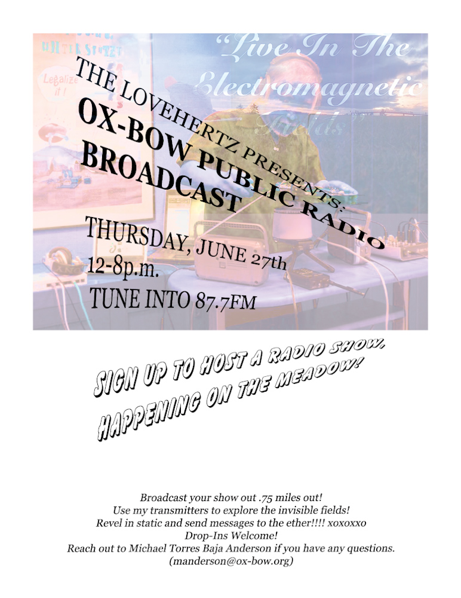
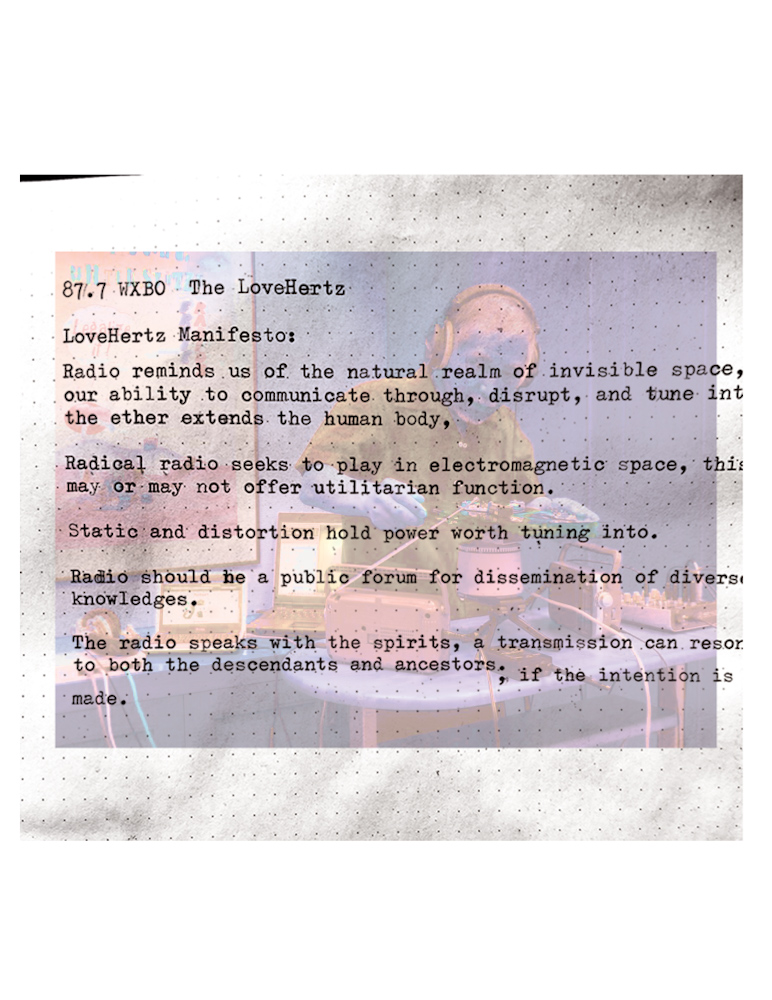
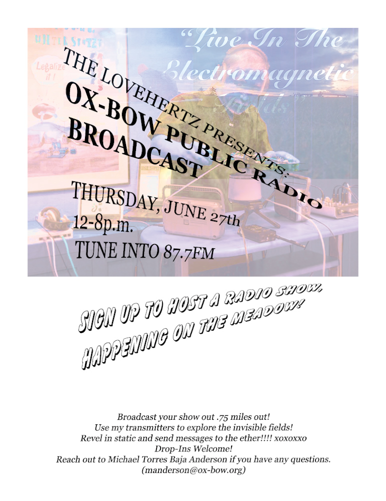
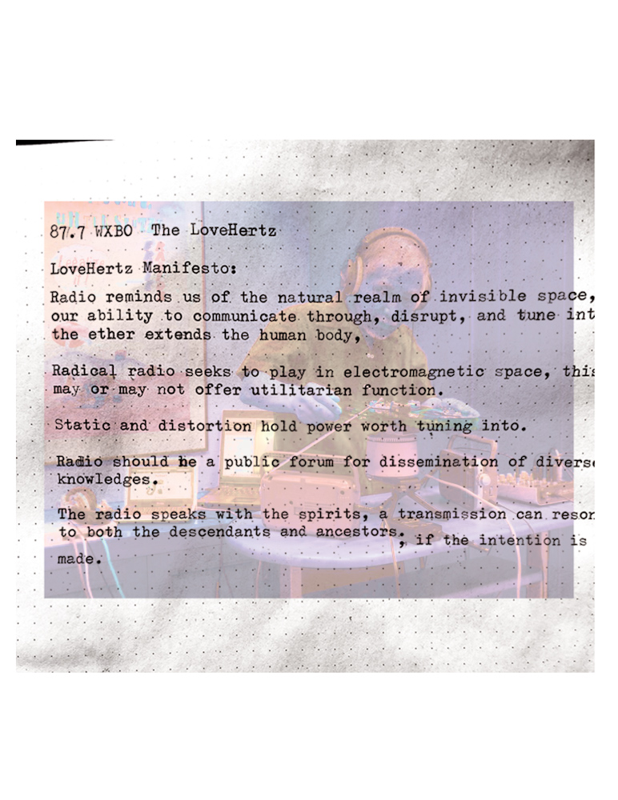

Michael Paul Baja Anderson
Creating moments and objects
Anderson's work with community seeks to create spaces of healing, connection, education, discussion, vibrancy, and nourishment.
 Teaching weaving techniques at Hyde Park Art Center's Creativity Camp. Summer 2025.
Teaching weaving techniques at Hyde Park Art Center's Creativity Camp. Summer 2025.
 Student weaving on Rigid Heddle Loom at Hyde Park Art Center's Creativity Camp. Summer 2025.
Student weaving on Rigid Heddle Loom at Hyde Park Art Center's Creativity Camp. Summer 2025.
 Classroom's communal weaving made at Hyde Park Art Center's Creativity Camp. Summer 2025.
Classroom's communal weaving made at Hyde Park Art Center's Creativity Camp. Summer 2025.
 Student work including paper weaving, creative affirmations, and collages made at Hyde Park Art Center's Creativity Camp. Summer 2025.
Student work including paper weaving, creative affirmations, and collages made at Hyde Park Art Center's Creativity Camp. Summer 2025.
 Community weaving facilitated by Anderson at Ox-Bow School of Art and Artist's Residency. Summer 2024.
Community weaving facilitated by Anderson at Ox-Bow School of Art and Artist's Residency. Summer 2024.
 Filipino pancit made for over 100 comunnity members at Ox-Bow School of Art and Artist's Residency. Summer 2024.
Filipino pancit made for over 100 comunnity members at Ox-Bow School of Art and Artist's Residency. Summer 2024.
 Allergen-free Earl Grey Tea Cake made for community members at Ox-Bow School of Art and Artist's Residency. Summer 2024.
 Open call poster for Anderson's pirate radio station broadcast at Ox-Bow School of Art and Artist's Residency. Summer 2024.
 The LoveHertz Radio Station Manifesto. Summer 2024.
Clip from Riso Relations and Bookish Behaviors class led by Madeline Aguilar and bex ya yolk, hosted on The LoveHertz Radio Station. Summer 2024.
Allergen-free Earl Grey Tea Cake made for community members at Ox-Bow School of Art and Artist's Residency. Summer 2024.
 Open call poster for Anderson's pirate radio station broadcast at Ox-Bow School of Art and Artist's Residency. Summer 2024.
 The LoveHertz Radio Station Manifesto. Summer 2024.
Clip from Riso Relations and Bookish Behaviors class led by Madeline Aguilar and bex ya yolk, hosted on The LoveHertz Radio Station. Summer 2024.